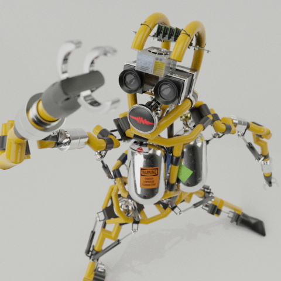
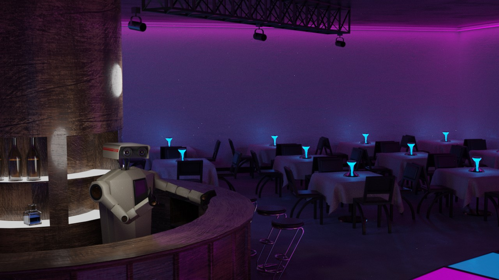

HOLOMAP
A holographic topological map created using Blender's Shader Nodes. Vertical scanning adds physicality to the effect.
CYBERDRIVE
Semi-dynamic landscape from EQ data, created in Blender without Python.
INDUSTRIAL
A humanoid industrial robot created as an album cover. IK pistons track to the character's arms to simulate powered movement.

RADBOT
An radical 80s-style robot bartender created for an experiment in realtime VR puppeteering. Radbot was rendered in Blender's Eevee engine while being controlled via UDP from a simple Unity app.
